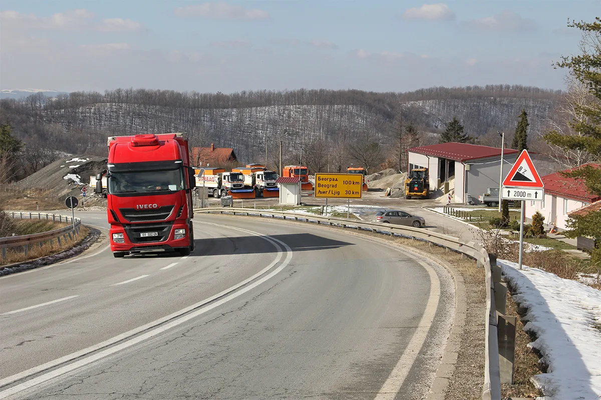

If 235km of single-track dirt road through some treacherous mountain passes is your idea of a fun road trip, then the Keylong to Kishtwar road in India is the one for you !
There are no safety barriers between you and a drop of thousands of metres into the valley below — risky, right?**
Weather conditions can be unpredictable & hazardous, making it a real challenge … Do you dare?
Ibarska Magistrala, Serbia
Known locally as the 'Black Highway', State Road 22 or 'Ibar Highway' is one of the most dangerous roads in Europe, as well as one of the busiest in the country.
A series of long straight roads punctuated by dangerous corners cause high occurrences of accidents, especially at night. Most of these are attributed to speeding or motorists driving under the influence of alcohol.
The highway connects Belgrade to other large municipalities within Serbia and neighbouring countries such as Montenegro.

Transfăgărășan, Romania
Romania has some of the worst roads in Europe in terms of the quality of its highways. But their most famous and most dangerous road is the Transfăgărășan Highway.
This winding mountain road reaches altitudes of over 2,000m and exhibits some amazing scenery along its 150km length. t comprises hairpin bends, tunnels and drastic elevation changes, making it quite a challenge for many tourists who drive along this road each year.
Hazards and Challenges
The other main hazard you may encounter on this highway is huge flocks of sheep in the middle of the road – Shepherds also use the route to move their sheep between grazing lands, so this road might be one to avoid if you are in a hurry.